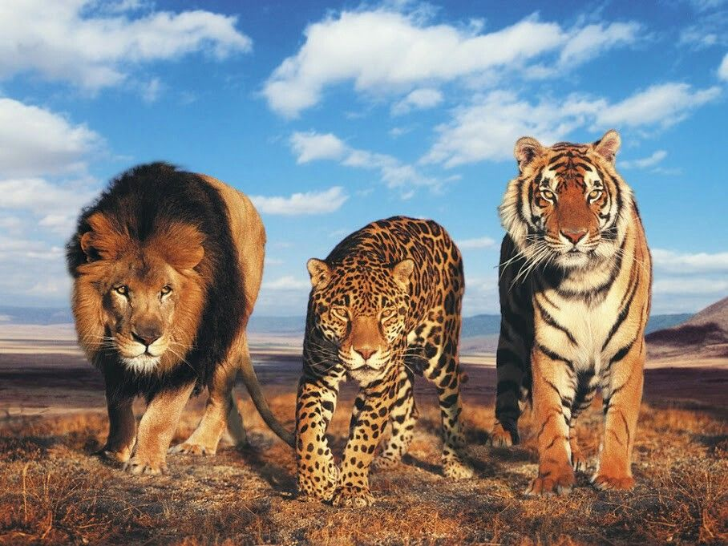
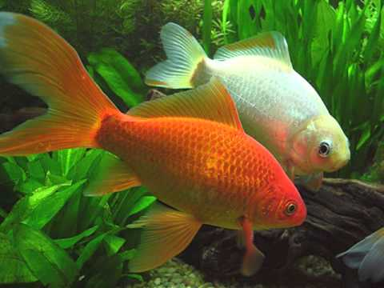
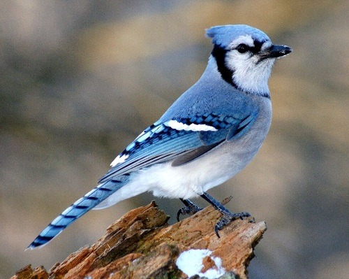
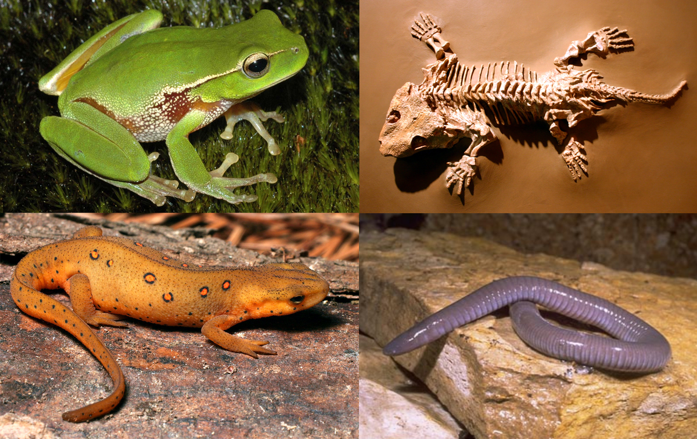

Los animales son aquellos seres vivos capaces de moverse, y que carecen de clorofila y de paredes celulares, es decir que son muy distinto de las plantas como podemos ver. Los hombres son incluidos dentro del grupo de los animales, aunque a diferencia de estos poseen la capacidad de pensar.
Mamíferos: Lo que los diferencia de los demás vertebrados es que generalmente están cubiertos y protegidos por pelo. En la mayoría de las especies, las hembras cuentan con mamas que les permite generar leche para amamantar o alimentar a sus crías.
Peces: Los peces se diferencian de los animales vertebrados ya que disponen de mecanismos de respiración debajo del agua a través de las branquias, por las cuáles absorben el oxigeno disuelto en el agua.
Aves: Las aves son seres vivos de sangre caliente, que poseen estructura ósea interna con extremidades superiores e inferiores, además de columna vertebral, son más destacados por su capacidad de volar gracias a sus alas, aunque no todas las aves pueden utilizar sus alas para volar.
Reptiles y Anfibios: Los reptiles son animales vertebrados cuyo cuerpo está principalmente recubierto de escamas en forma de protección. Poseen extremidades potentes y un sistema de reproducción mediante huevos con cascarón. Una de las características de los anfibios que resulta especialmente única y llamativa, es que mientras están en su fase larvaria, cuentan con un tipo de respiración similar a la de los peces y pueden respirar debajo del agua, mientras que cuando llegan a su vida adulta, desarrollan respiración pulmonar terrestre.
